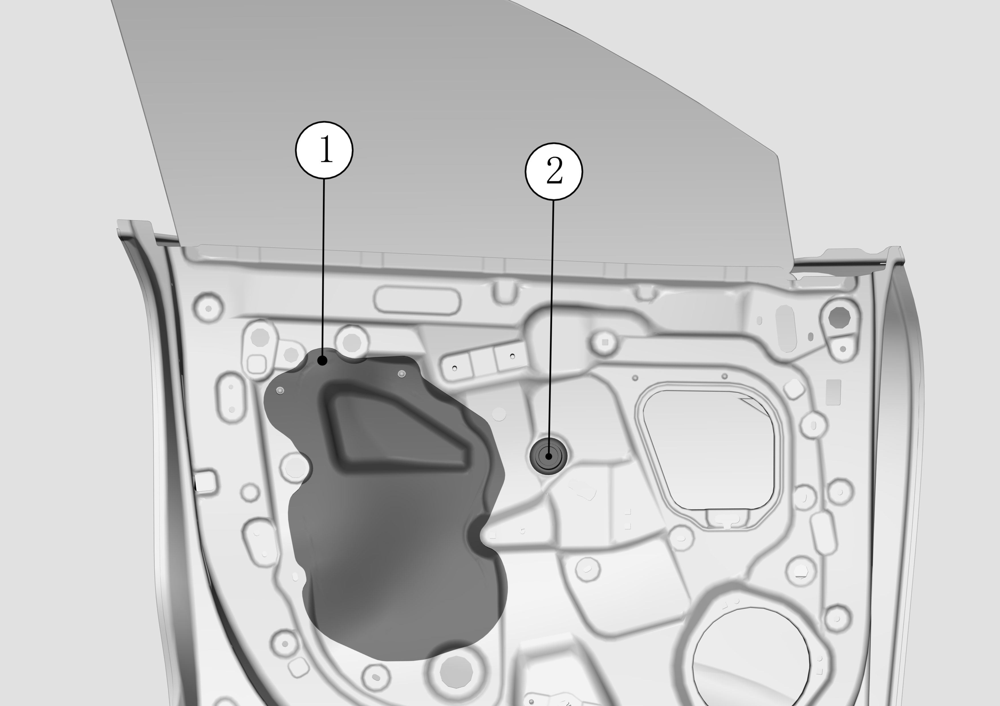
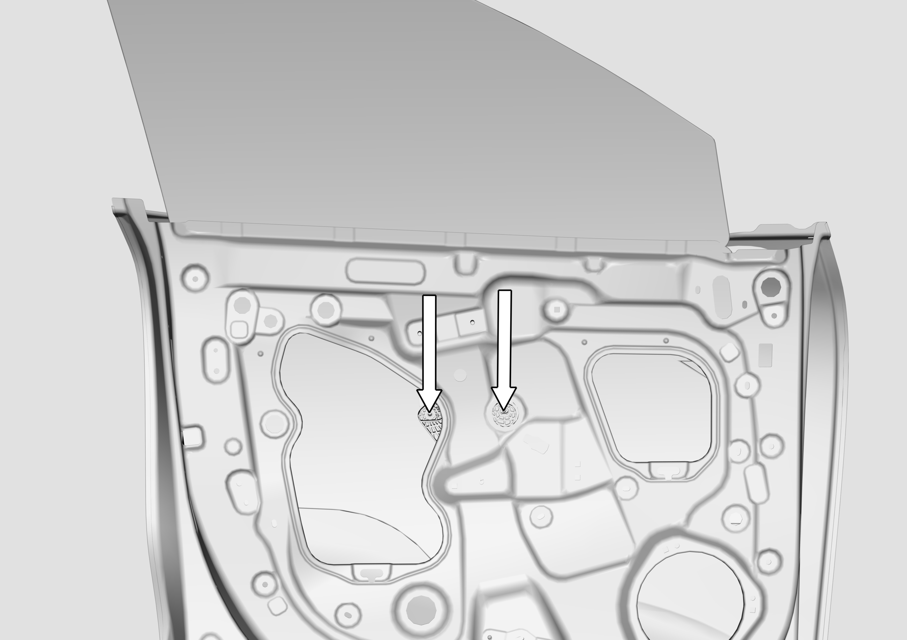
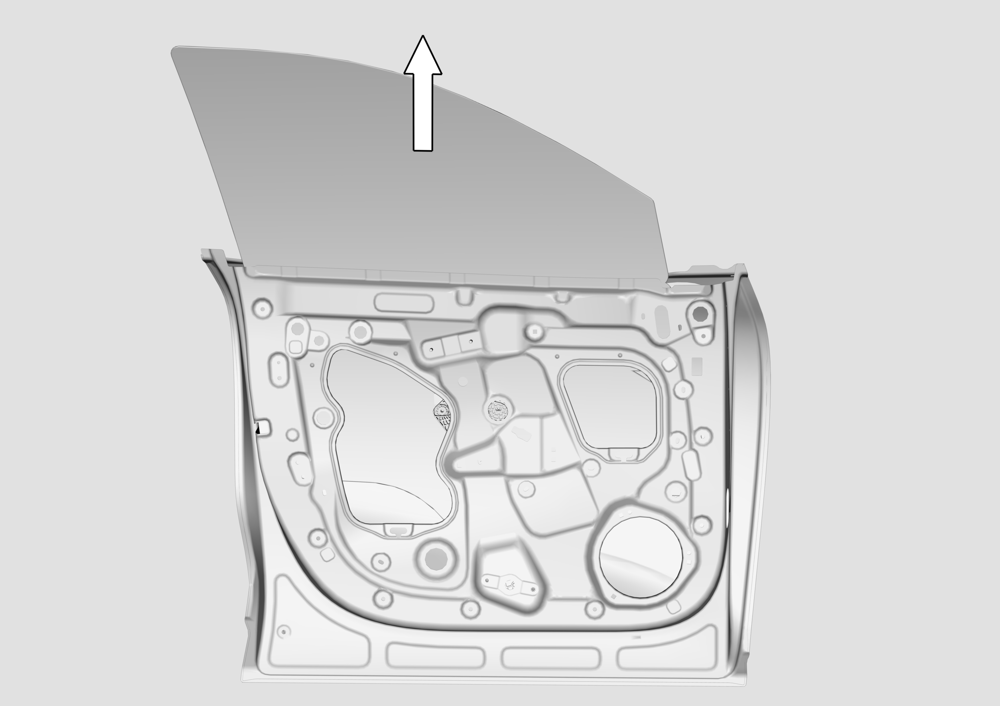

拆卸
这里介绍的是左侧前车门玻璃的拆卸和安装，右侧前车门玻璃的拆卸和安装大体相同。
拆卸前车门饰板 拆卸与安装前门内饰板
取下密封薄膜（编号①指示处）和车门玻璃安装过孔防水堵盖（编号②指示处）。

可以从过孔中看到前车门玻璃的两颗固定螺栓，如箭头所示位置，使用10号套筒拧松前车门玻璃固定螺栓。安装时螺栓拧紧力矩：9±1N.m。

手握玻璃顶部，沿箭头方向取出前车门玻璃。

安装
安装大体以拆卸倒序进行。需注意：玻璃安装后需要确保玻璃面差-1±1.5mm，以B柱盖板为测量基准。